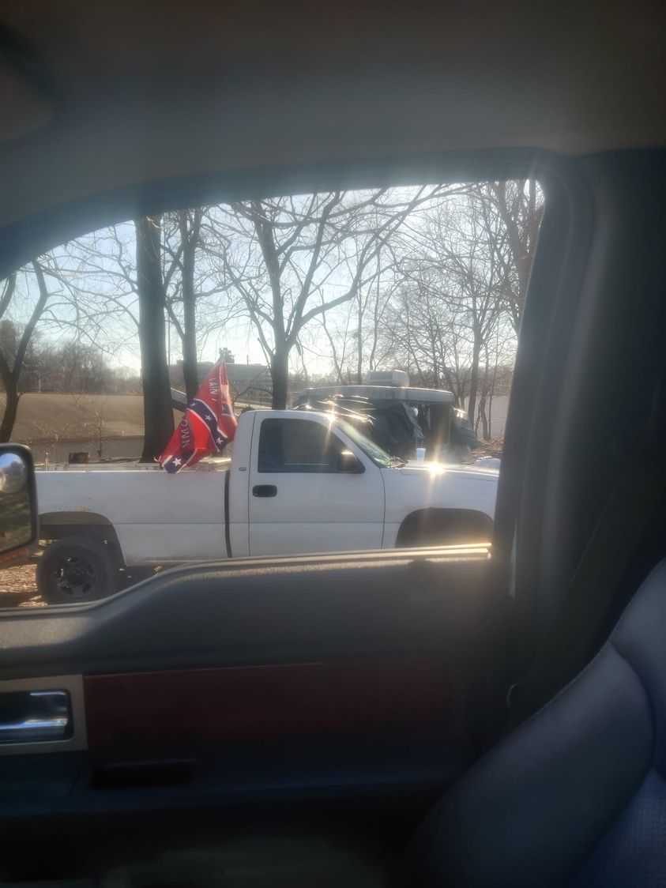

Timeline photos
Here's the truck of a friend of ours that regularly comes by to help our houseless neighbors.
Homelessness has not been politicized because neither party wants anything to do with the homeless of America. Consequently, I get to experience the most beautiful array of wonderful American citizens. Black, white, rich, poor, liberal, conservative. I had a wonderful conversation with a man from Puerto Rico this morning. He is a big supporter of ours.
And we have supporters that also support the Confederacy. That's a complicated topic. And we don't need to get into all of what this flag means. It means different things for different people.
We love to pigeonhole people and stereotype people. Conservatives and liberals do it equally. But the fact of the matter is, you always have to judge a person by the content of their character and not the flag on the back of their pickup truck.
I have seen supporters of homeless people in every possible grouping of humans. Hell's Angels, Crips, Bloods, Aryan Brotherhood, Black Lives Matter, Communists, anarchist, daughters of the Confederacy, the list is endless.
Are you really going to judge this guy by the flag on his truck when he comes to help homeless people and you don't? I'm not judging you either. We all have our own path in the world. What I'm saying is, we come to where we are in life for many many reasons. But ultimately whether we are a good person or a bad person has nothing to do with the flag we wave. I've seen terrible Christians and I've seen wonderful Christians. Just because a person is Christian has nothing to do with whether they are good or bad.
My general rule is, if you don't physically hurt other people because of your beliefs, you're okay in my book. You're just expressing yourself in a way that is meaningful to you.
America is amazing because of its diversity. All of its diversity.
Let the hate commence now...